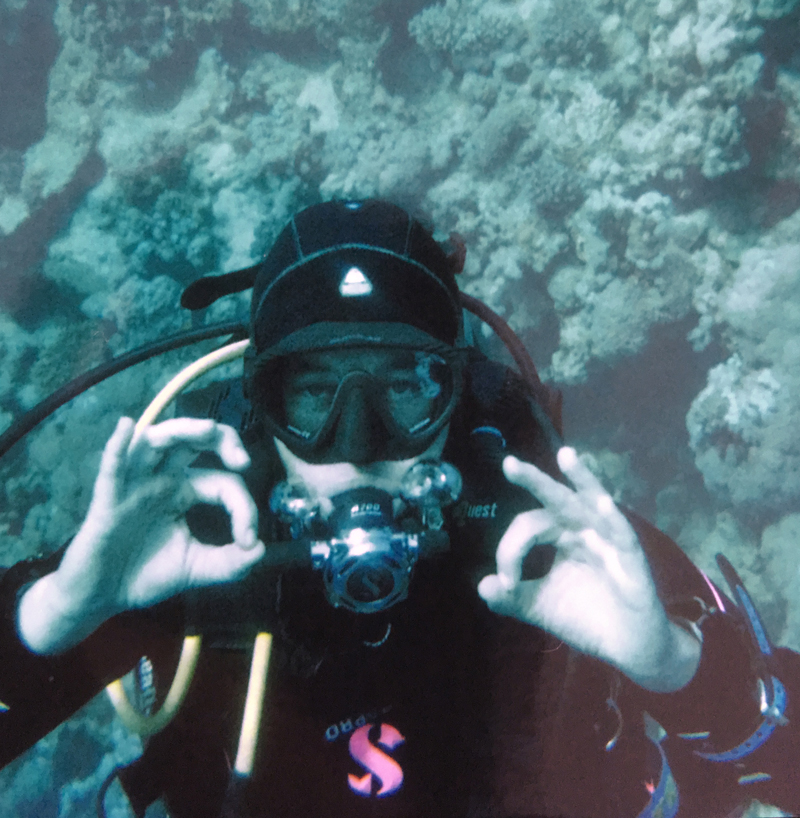
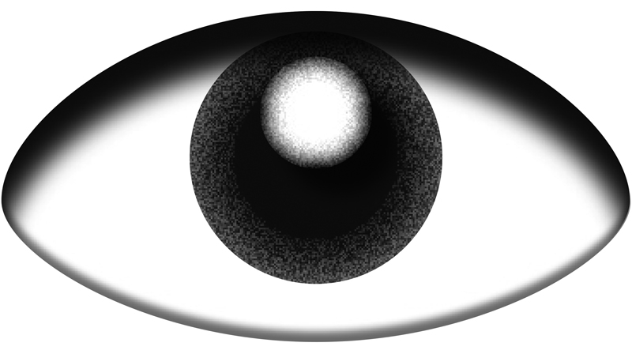

Anna Lena von Helldorff’s praxis is based on the principle of collaboration in varying constellations and formats—reflecting on forms of exhibiting, interpreting , presenting, publishing, making public—she understands graphic design or rather gestaltung as an editing process to communicate and visualize existing and new structures and their content as an act of interpretation, a process of translation—as a vital intersection of society and everyday life—with a focus on the potential relation between language, type, image and meaning—looking at the past in the present to project a future—of visual communication.  Her studying of visual communication started as daughter of a graphic designer and an interpreter, passed through the Academy of Visual Arts Leipzig (1998–2004)—and since continues through teaching herself when there is the chance. She founded the collective studio buero total (2006–2019) in Leipzig and co-founded the KV—Art Association of Contemporary Art Leipzig in a collective of artist, curators and art historians, reflecting on contemporary production of visual culture, its resources and conditions. She moved (back) to Munich in 2019—where she was born in 1977—to expand forms and formats through collaborating strategies, reflecting visual production as source for questions and discourse within the editing of visual events and visual communication.
if you see something